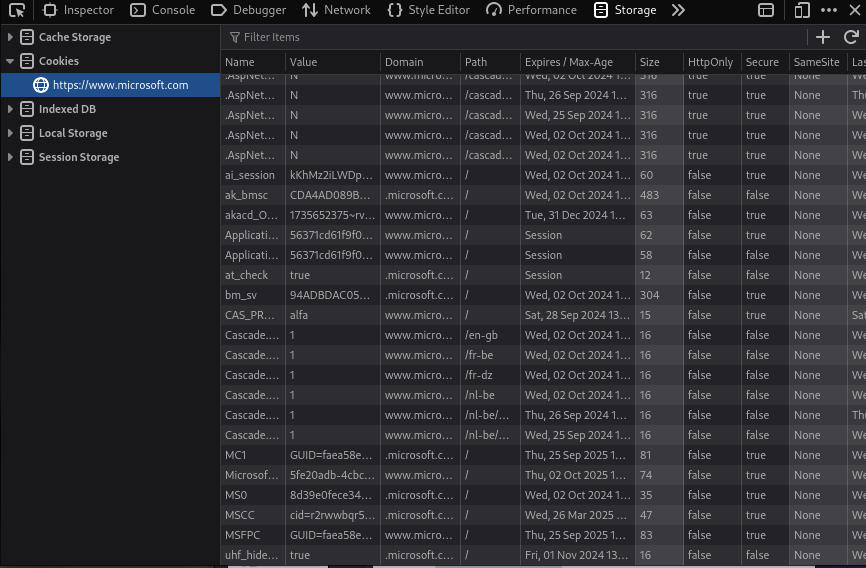

Het lijkt erop dat Microsoft gekozen heeft om de taal te bepalen via de subdirectory inplaats van cookies of local storage zoals sommige andere sites.
Het is ook mogelijk dat deze info verbogen zit achter een bepaalde session token of dergelijke.
